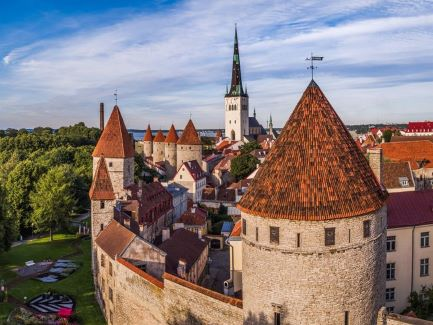
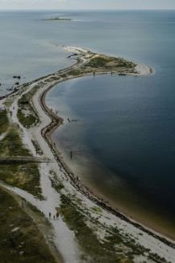
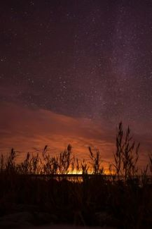
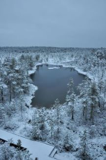
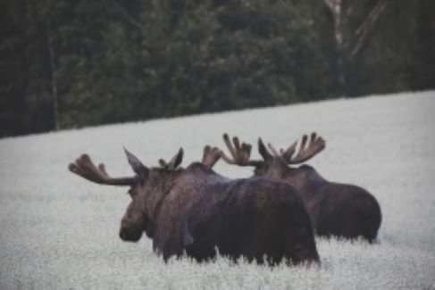
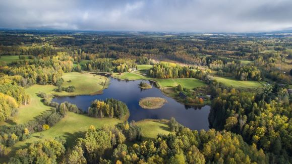

Het is moelijk im te zeggen wat je in Estland zou doen, omdat zo veel in zin komt, wanneer ik denk waar je daar alles gaan kan, en wat je daar zien zou kunnen. Zeker ook afhankelijk van de seizoen, in winter heeft men daar meer sneeuwactiviteiten en naturlijk, de NOORDENLICHTER, in zomer hebben wij de MIDZOMERNACHT.
Neem zeker ook een kijke in de links, om jezelf een beeldje van Estland te maken.
Hieronder een klein lijstje met een paar opties, wat men zeker niet in Estland missen wil:
De oude binnenstad van Tallinn, de hoofdstad van Estland, is een UNESCO-werelderfgoed en een van de best bewaarde middeleeuwse steden in Europa. Wandel door de geplaveide straten, bewonder de gotische architectuur en bezoek de beroemde bezienswaardigheden zoals:
Authentieke Middeleeuwse Restaurant Olde Hansa in Tallinn
Estland heeft duizenden eilanden, waarvan enkele de moeite waard zijn om te bezoeken:
Webpagina met informaties over eilanden
 Op slechts een uur rijden van Tallinn ligt het grootste en oudste nationale park van Estland, Lahemaa Nationaal Park. Dit park biedt prachtige landschappen met bossen, meren, moerassen, en de wilde kustlijn aan de Oostzee. Je kunt hier wandelen, fietsen en oude landgoederen zoals Palmse en Sagadi verkennen. Het park is ook een toevluchtsoord voor veel diersoorten, waaronder elanden en lynxen.
Webpagina van Natuurpark Lahemaa
Dit museum ligt net buiten Tallinn en biedt een authentiek kijkje in het landelijke leven van Estland door de eeuwen heen. Het Ests Openluchtmuseum heeft traditionele boerderijen, windmolens, en dorpshuizen uit verschillende regio’s van Estland. Je kunt ambachtelijke demonstraties bekijken en zelfs lokale gerechten proeven.
Webpagina van Ests Openluchtmuseum
Estland staat bekend om zijn uitgestrekte veenlandschappen. Bezoek het Soomaa Nationaal Park, dat beroemd is om zijn "vijfde seizoen" wanneer het smeltwater de rivieren overstroomt. Je kunt hier een kanotocht maken of een wandelpad volgen door de mystieke moerassen.
Wilde safari met kans op Elande en andere wilde dieren te zien
 In het Hotel Viru in Tallinn bevindt zich een fascinerend museum over de KGB. Tijdens de Sovjetperiode werd dit hotel gebruikt om buitenlandse bezoekers te bespioneren. Het museum biedt een kijkje in deze donkere periode van de Estse geschiedenis en de geheimen van de KGB.
Als je in de winter gaat, biedt Estland tal van unieke activiteiten: